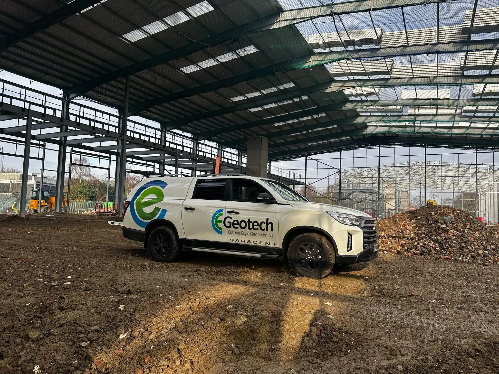
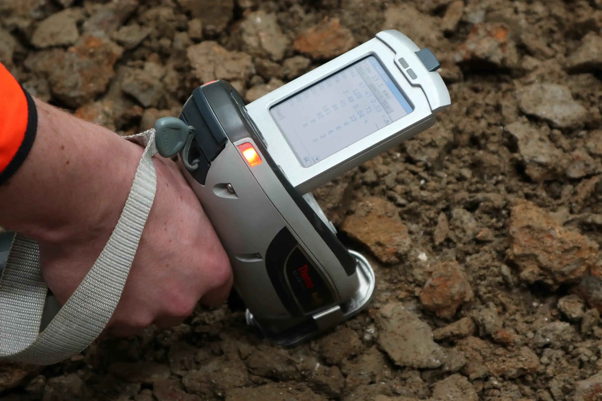
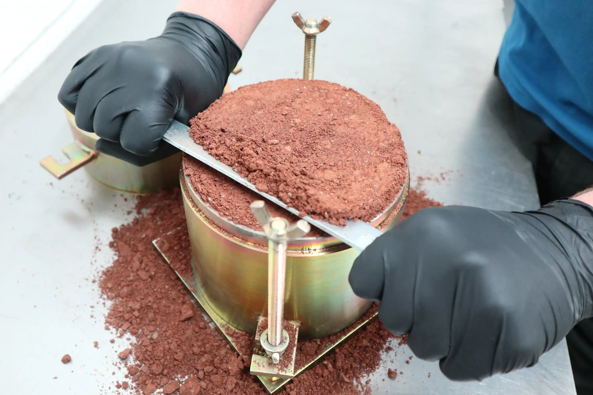
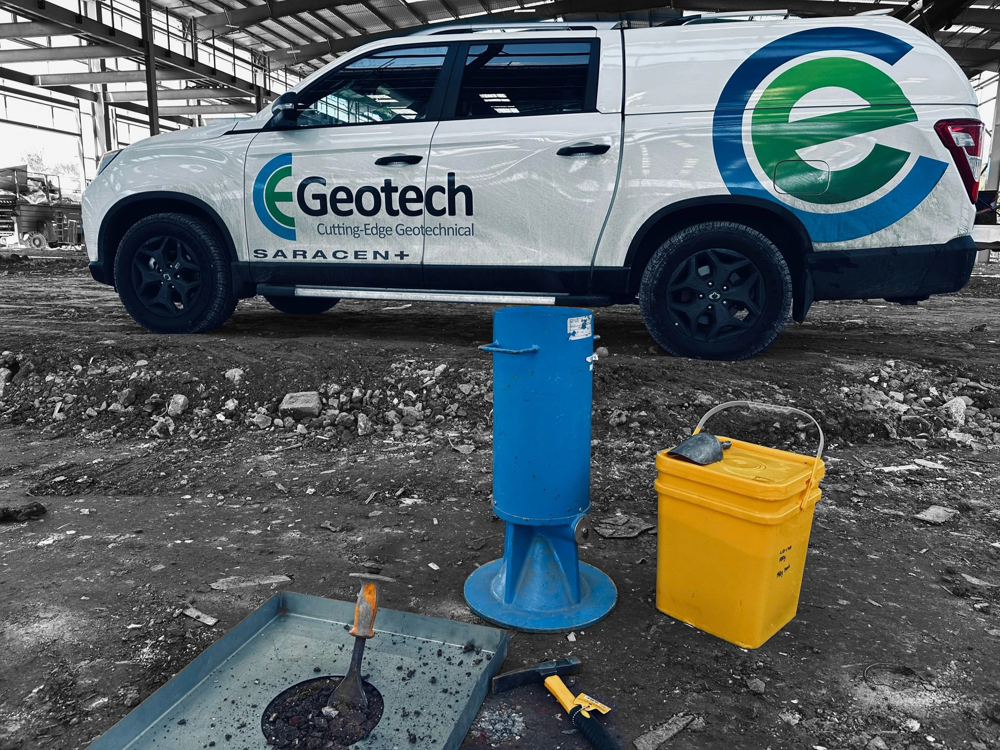
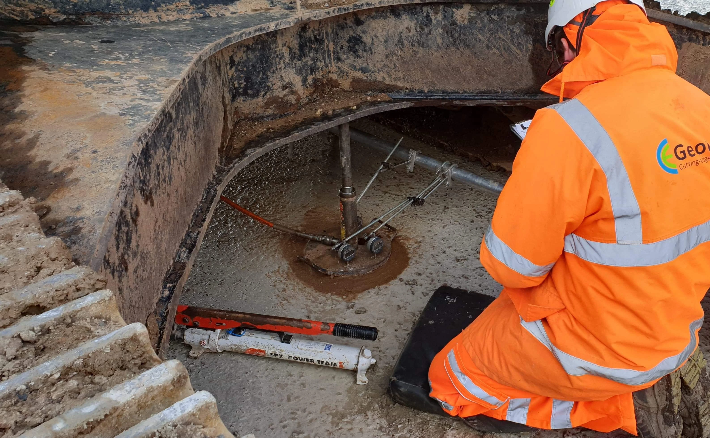
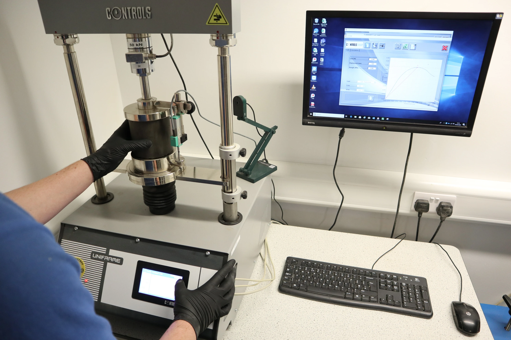
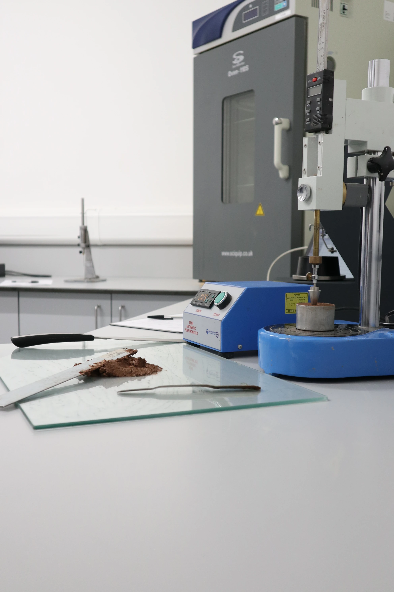
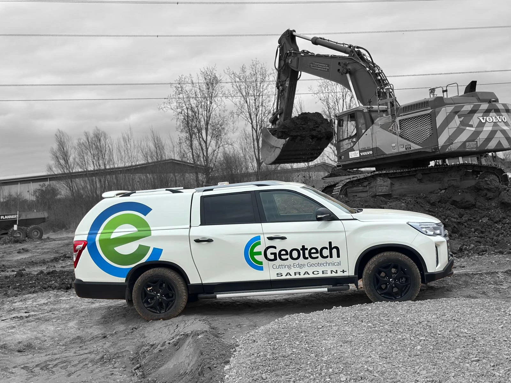
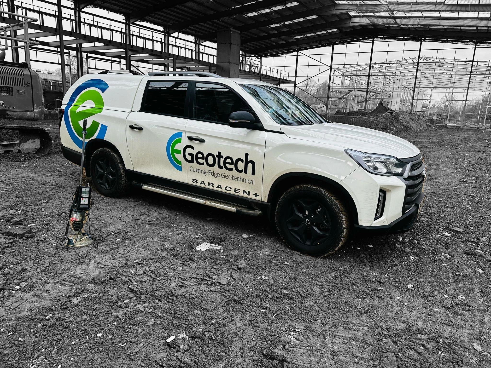

Cutting Edge Geotechnical
At CE Geotech, we are passionate about transforming challenging ground conditions into opportunities for innovation. As specialists in hydraulically bound soils, we deliver tailored geotechnical solutions that drive the success of ground engineering projects across the UK.
We don’t just test samples, we deliver projects! This approach ensures our clients receive the highest level of continuity and project management, all the way through a stabilisation project lifecycle; from initial site characterisation, laboratory mix design study phases, and project sign-off through on-site control and validation testing.
Discover how CE Geotech can add value to your next project—download our Capability Statement (PDF) to explore our full range of services and expertise.
Site Testing Services
Site Testing Services
Utilising our expertise and experience gained over many years, we offer a fully integrated materials testing service in all aspects of soil stabilisation works from initial site visit, sampling, trial pitting and DCP testing through to earthworks control and validation testing during the construction phase.
Through years of experience on site, our engineers not only provide timely and robust data for stabilisation control, but can also assist with the interpretation of challenging site conditions.
Laboratory Mix Design Studies
Laboratory Mix Design Studies
We tailor project-specific mix design studies to meet your requirements, providing comprehensive laboratory testing and optimisation for hydraulically bound soils. Our services include OMC-MDD, MCV, sulphate suite, PSD, plasticity index, and lime demand testing, ensuring your stabilisation project meets all technical standards.
Our laboratory team delivers robust data and expert interpretation, supporting successful ground engineering from initial characterisation through to final validation.
Our Location
CE Geotech is based in the heart of Derbyshire, providing geotechnical solutions across the UK. Our laboratory and offices are easily accessible and situated in a scenic rural setting.
CE Geotech / CEG LaboratoriesAshover Business Centre,
Matlock Road, Kelstedge,
Ashover, Derbyshire,
S45 0DX, United Kingdom